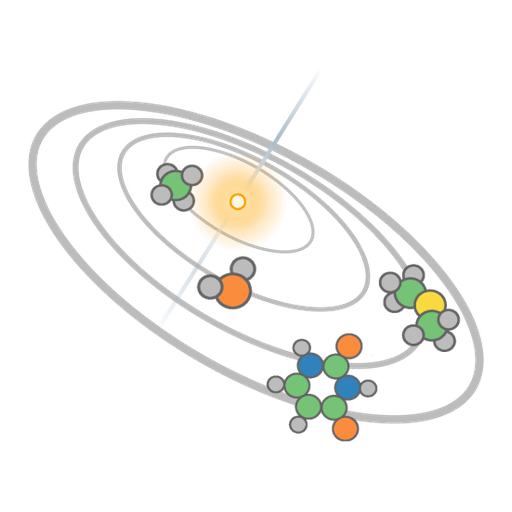

Build a 3D starting geometry with explicit hydrogens. Use @ or @@ to specify a chiral center.
Open one gas-phase structure with coordinates in ångströms.
Open a trajectory with a fixed atom order. Periodic extended XYZ files must include the lattice in every frame.
Enter the interval for MD files without timestamps. Optimizations use step numbers. Up to 5,000 frames and 500,000 atom positions.